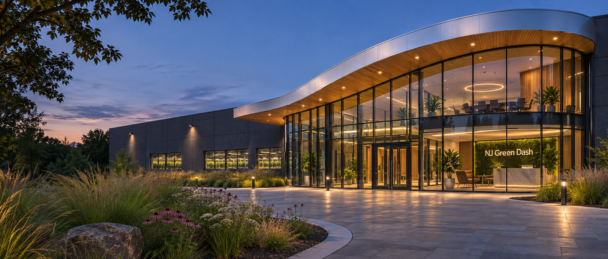

New Jersey Cannabis Facility Consulting
From facility vision to practical development strategy.
NJ Green Dash helps operators organize facility feasibility, space needs, regulatory questions, site considerations and project coordination — from an early idea to an informed next step.
Get a Consultation → Explore sample projects ↗Original concept collection
Featured Facility Studies
Individually developed visual concepts with case studies, 3D layout diagrams and downloadable PDF packages.

Cultivation · 25,000 SFRiverview Grow ComplexSawtooth glazing · riverfront bufferView study →

Cultivation · 30,000 SFCanopy Modular CampusTranslucent glass · linked modulesView study →

Mixed Facility Concept · 10,000 SFMetro Green CollectiveCopper sunshades · glazed infillView study →

Adult-use Retail · 8,500 SFGarden State DispensaryView study →

Cultivation · 20,000 SFPrecision Cultivation CenterView study →

Manufacturing · 15,000 SFLiberty Processing FacilityView study →

Adult-use Retail · 6,000 SFThe Cornerstone DispensaryView study →

Cultivation Support · 12,400 SFBirchline Scandinavian Propagation LabView study →

Adult-use Retail · 5,800 SFPine Ridge Log Cabin DispensaryView study →

Manufacturing · 14,200 SFAgave Court Mexican-Style Packaging FacilityView study →

Adult-use Retail · 7,400 SFTrade Winds Caribbean DispensaryView study →

Testing Laboratory · 16,100 SFWerkhof German Industrial Testing LabView study →

Cultivation · 22,600 SFMonsoon Ridge Tropical Cultivation FacilityView study →
Focused facility consulting
Bring your vision into focus.
Discuss renovation feasibility, cultivation-support workflows, manufacturing planning, site circulation and the documentation needed to engage the proper next steps.
Start a Conversation → Cultivation operations
Cultivation operations Retail fit-outs
Retail fit-outs Processing and support
Processing and supportIndependent consulting
Coordinating the questions that matter.
Consultant Lucian DeMarco · NJ Green Dash · Brick, New Jersey
All concept portfolio entries are fictional illustrations, not real client commissions, approved plans or regulatory submissions. A proposed facility's feasibility and permissions must be evaluated against the current NJ-CRC and relevant municipal requirements.
New Jersey cannabis facility planning questions
What can NJ Green Dash help with?
We help operators evaluate potential sites, organize space and workflow requirements, and track regulatory questions for dispensaries, cultivation facilities, and processing operations.
Where do you work?
NJ Green Dash is based in Brick and works with operators across New Jersey. Bring the municipality, potential site address, proposed use, and target floor area to your first consultation.
What should I look at before choosing a site?
Start with proposed use, available utilities, customer and staff access, delivery routes, and the separation needed between public and controlled areas.
Confidentiality & NDA commitment: NJ Green Dash handles commissioned facility consulting under nondisclosure agreements. No actual client identities, addresses, documents or project information are published without express written consent. All portfolio examples are fictional illustrative concepts, not licensed or completed facilities.
Contact NJ Green Dash
Let's discuss your facility needs.
Tell us your business type, expected area, site status and the planning questions you're facing. Consultation inquiries can be sent through the form or directly to our email.
Phone: 732-556-7388
Business email: njgreendash@gmail.com
Address: 471 Mantoloking Rd, Brick, NJ Directions on Google Maps
Owner: Lucian DeMarco · lucianmdemarco@gmail.com